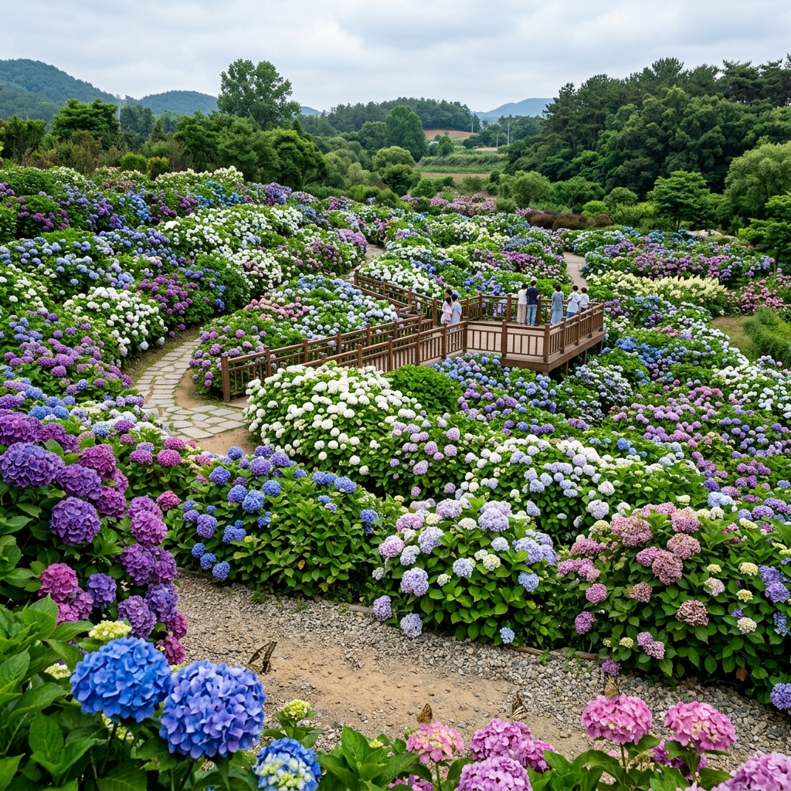
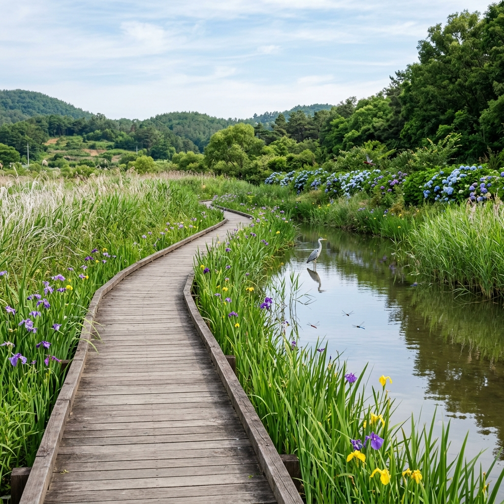
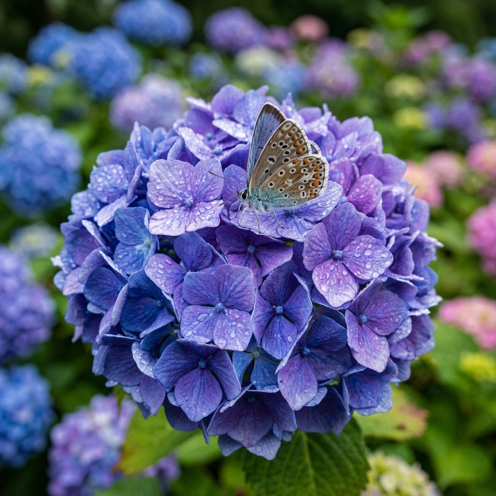

수국을 실컷 본 다음, 함평천을 따라 길게 이어진 갈대밭 산책로를 걷는 시간이 이 동네 여행의 또 다른 백미였습니다.
함평천은 함평읍 한가운데를 가로질러 서해 쪽으로 빠져나가는 작은 하천입니다.
그 둘레에 펼쳐진 갈대밭은 6월쯤이면 푸른 갈대가 사람 키를 훌쩍 넘는 1.5~2m 높이로 빽빽하게 자라, 물가 특유의 서늘하면서도 향긋한 공기를 만들어 냅니다.
한여름 대낮에도 갈대 사이 길을 따라 걷다 보면 체감 온도가 눈에 띄게 떨어지는 것을 몸으로 느낄 수 있었습니다.
함평천 갈대 구간 산책로는 길이가 대략 1.5km~2km 정도여서, 왕복으로 30~40분 잡으면 적당했습니다.
중간 지점에는 나무 데크로 만든 전망대가 놓여 있어 갈대 너머로 트인 하늘과 하천을 한눈에 담을 수 있습니다.
이 전망대에 서서 멀리 수국 군락이 함께 잡히도록 사진을 찍으면, 함평의 여름 풍경 전체를 프레임 하나에 욱여넣을 수 있었습니다.
수변 생태가 워낙 풍부해 산책 도중 왜가리·백로·논병아리 같은 물새도 어렵지 않게 마주칩니다.
봄에서 여름 사이에는 청개구리 우는 소리가 들리고, 여름밤이라면 반딧불이를 볼 가능성도 있습니다.
다만 반딧불이는 해가 진 뒤에 와야 하고, 일정을 따로 짜야 한다는 점은 미리 알아두면 좋습니다.
수국(水菊)은 범의귀과에 속하는 낙엽 관목으로, 여름 문턱인 6~7월에 꽃을 피웁니다.
이 꽃의 가장 신기한 점은 흙의 산도(pH)에 따라 색이 달라진다는 것입니다.
산성 토양에서는 알루미늄이 흡수되면서 파란색이나 보라색으로 피고, 알칼리성 토양에서는 붉은 계열이나 분홍색으로 피며, 중성에 가까운 흙에서는 흰색이나 크림색이 됩니다.
그래서 같은 공원 안이라도 구역별로 흙 조건이 달라, 색이 제각각인 수국을 한자리에서 동시에 감상할 수 있었습니다.
함평 자연생태공원이 남다른 까닭은 전국에서도 손에 꼽힐 만큼 많은 50여 종의 수국을 거느리고 있다는 데 있습니다.
보통 다른 공원에서 만나는 수국이 10~20종 안팎인 것과 비교하면, 함평은 일본·유럽·미국에서 개량된 갖가지 원예 품종에 우리나라 자생 수국까지 한데 모아 전시합니다.
꽃 모양도 동그랗게 뭉친 '공 수국', 꽃잎이 납작하게 펼쳐지는 '납작 수국', 겹꽃 품종, 레이스캡형까지 폭이 무척 넓었습니다.
6월 수국 명소로 전국에 이름난 곳들, 이를테면 제주 수국로드나 공주 유구수국정원과 견주어 봐도 함평의 품종 다양성은 단연 돋보입니다.
수국을 좋아하는 사람이라면 한 번쯤은 일부러 찾아가 볼 만한 곳이라고 느꼈습니다.

함평 자연생태공원은 함평나비대축제를 통해 전국에 이름을 알린 뒤, 나비 시즌이 끝난 여름에도 사람들의 발길을 붙드는 생태 볼거리를 두루 갖춘 복합 공원으로 성장했습니다.
공원의 중심을 이루는 시설은 엑스포공원과 나비·곤충생태관입니다.
2001년에 열린 함평나비엑스포의 시설을 손봐 상설 전시관으로 운영하고 있으며, 살아 있는 나비와 곤충을 바로 눈앞에서 들여다볼 수 있는 생태 체험 공간이 마련돼 있습니다.
특히 열대 나비가 날아다니는 실내 나비관은 아이들이 무척 좋아하는 곳이었습니다.
공원을 끼고 함평천이 흘러 수변 생태도 풍성합니다.
함평천 물가를 따라 갈대와 물억새, 창포 같은 수생 식물이 자라고, 왜가리와 백로 같은 새도 관찰할 수 있습니다.
수국 철에는 공원 안 수국 군락과 함평천 수변 산책로를 하나로 묶은 탐방 코스가 방문객들 사이에서 큰 호응을 얻고 있다고 합니다.
함평군 자체가 전남 서해안의 작은 도시라 아직 널리 알려지지 않은 편입니다.
그 덕분에 봄 나비 시즌과 달리 수국 시즌에는 한결 한가하게 꽃을 즐길 수 있다는 점이 이맘때 방문의 큰 매력으로 다가왔습니다.
수국은 그해의 기온과 햇볕 양에 따라 피는 시기가 해마다 조금씩 달라집니다.
함평 자연생태공원의 수국은 예년 기준으로 보면 6월 초~중순에 절정에 다다릅니다.
2025년에는 6월 7일부터 6월 21일 전후에 가장 화려한 개화 상태가 유지됐고, 2026년도 이와 비슷한 시기로 예상됩니다.
다만 봄철 기온이 높으면 개화가 앞당겨질 수 있고, 추위가 길어지면 늦어질 수도 있어, 방문 1~2주 전에 함평군 공식 채널로 최신 개화 상황을 확인하는 일이 무엇보다 중요했습니다.
수국은 보통 2~3주 넘게 꽃이 버텨 주는 편이라, 절정에서 며칠 어긋나게 가더라도 충분히 아름다운 수국을 볼 수 있습니다.
개화 피크 1~2주 전과 직후 1주 정도도 방문할 만한 가치가 있었습니다.
날씨로 보면 맑은 날보다 흐린 날이 오히려 수국 사진에는 더 잘 맞습니다.
강한 직사광선 아래에서는 꽃잎 색이 날아가 실제 색감이 사진에 잘 담기지 않았기 때문입니다.
얇게 구름이 깔린 날에 수국 색이 가장 또렷하고 생생하게 표현됐고, 비가 막 그친 직후에는 꽃잎에 물방울이 맺혀 특유의 청초한 분위기가 살아나니, 비 예보가 있는 날이라고 방문을 망설일 필요는 없었습니다.
함평 자연생태공원은 면적이 넓어, 미리 동선을 짜고 움직이는 편이 훨씬 효율적이었습니다.
제가 권하고 싶은 관람 순서는 정문에서 출발해 수국 단지 → 나비·곤충생태관 → 함평천 수변 → 갈대밭 산책로로 이어지는 흐름입니다.
이 코스를 서두르지 않고 천천히 돌면 3~4시간이 걸리며, 가족과 함께라면 생태관 체험 시간을 더해 반나절에서 하루로 잡는 편이 좋았습니다.
수국 단지는 공원 입구에서 가장 가까운 구역에 몰려 있습니다.
보라·파랑 계열 수국이 공원 초입을 채우고, 안쪽으로 들어갈수록 흰색·분홍색 품종이 차례로 나타났습니다.
특히 공원 한가운데에 자리한 수국 언덕 구역은 완만하게 비탈진 지형 위로 수국이 빼곡히 심겨 있어, 전체를 한눈에 굽어볼 수 있는 뷰 포인트가 만들어집니다.
수국 군락 사이로는 좁은 산책로가 나 있어 꽃 한가운데를 직접 걸어 다닐 수 있었습니다.
꽃 높이가 어른 무릎에서 허리 정도라, 키 작은 아이들도 꽃에 폭 파묻힌 듯한 사진을 남길 수 있었습니다.
동선만 잘 잡아 두면 넓은 공원이라도 헤매지 않고 알차게 둘러볼 수 있었습니다.

함평은 광주에서 30~40분쯤 떨어진 전남 서해안의 작은 도시입니다.
대중교통으로 갈 경우, KTX가 서는 광주송정역에서 함평으로 가는 버스가 다닙니다.
광주 유스퀘어 버스터미널에서도 함평까지 곧장 가는 직행 버스가 운행됩니다.
서울에서 KTX로 광주송정역까지 약 1시간 40분, 여기에 버스 40분을 더하면 2시간 20분 안에 함평에 도착할 수 있었습니다.
함평터미널에서 자연생태공원까지는 택시로 5~10분 안팎이면 충분했습니다.
자가용을 이용한다면 서해안고속도로 함평IC나 무안광주고속도로를 타는 것이 가장 빠릅니다.
서울에서 3시간 30분~4시간, 광주에서 40분, 목포에서 1시간 정도 걸립니다.
자연생태공원 안에 대형 주차장이 있어 주차에 대한 부담은 크지 않았고, 나비 축제 시즌에는 주차 유도 요원이 배치되지만 수국 시즌에는 비교적 넉넉하게 차를 댈 수 있었습니다.
목포·나주를 묶는 코스도 추천할 만합니다.
함평은 목포에서 차로 40분, 나주에서 30분 거리여서 주변 관광지와 엮어 1박 2일 남도 여행을 짜기에 좋고, 목포의 국립해양문화재연구소·영산호, 나주의 나주목사내아와 금성관까지 잇는다면 알찬 전남 서부 투어가 완성됐습니다.
함평 자연생태공원에서 수국 못지않게 핵심이 되는 공간이 바로 나비·곤충생태관이었습니다.
열대와 아열대 지역의 화려한 나비들이 생태관 안을 실제로 날아다니는 모습을 코앞에서 볼 수 있습니다.
모르포 나비나 헬리코니우스 나비처럼 교과서에서나 보던 화려한 나비와 한 공간에 있는 경험은 아이뿐 아니라 어른에게도 꽤 인상 깊었습니다.
운이 좋으면 생태관 안에서 손가락 위에 나비가 내려앉는 사진을 찍을 수도 있어, 방문객들에게 인기 있는 포인트였습니다.
곤충 전시관에는 세계 곳곳에서 온 희귀 곤충 표본과 살아 있는 곤충들이 함께 전시돼 있습니다.
장수풍뎅이·사슴벌레·왕귀뚜라미처럼 친숙한 곤충부터, 세계에서 가장 크다는 대벌레와 고수풍뎅이 같은 희귀종까지 두루 만날 수 있었습니다.
봄 시즌의 함평나비대축제 때와 달리, 수국 시즌에는 생태관을 찾는 사람이 적어 한결 여유롭게 둘러볼 수 있었습니다.
아이와 함께 오는 가족 여행이라면 수국 감상 뒤에 생태관 체험을 한 묶음으로 붙이는 것이 반나절을 알차게 보내는 방법이었습니다.
꽃 구경과 자연 학습을 한 번에 해결할 수 있어 부모 입장에서도 만족스러운 코스였습니다.
함평은 먹거리로도 제법 이름이 알려진 고장이었습니다.
함평 한우는 전국에서 품질을 인정받는 축산물입니다.
함평군이 정식으로 인증한 한우만 쓰는 식당이 읍내 곳곳에 있어, 서울보다 합리적인 값에 등심이나 갈비를 맛볼 수 있었습니다.
수국을 둘러본 뒤 읍내 한우 전문점에서 고기를 구워 먹는 코스는 함평 여행에서 빼놓을 수 없는 하이라이트였습니다.
함평 참메론도 눈여겨볼 특산품입니다.
서해안 해풍과 넉넉한 햇볕을 받고 자란 함평 참메론은 당도가 높기로 유명합니다.
수국 시즌인 6월이 메론 수확기와 겹쳐, 공원 주변 직판장에서 산지 가격으로 살 기회가 생깁니다.
1개에 1만~2만 원 선으로, 시중보다 저렴한 값을 기대할 수 있었습니다.
나비꿀도 함평만의 독특한 기념품이었습니다.
나비 생태 공원 주변 양봉에서 딴 꿀로, 야생화 꿀 특유의 복합적인 향미가 특징입니다.
공원 안 기념품점과 군내 직판장에서 살 수 있어, 여행 마무리에 손에 들고 오기 좋은 선물이었습니다.

함평 자연생태공원 수국 여행을 한층 알차게 만들어 줄, 직접 다녀와 보고 정리한 실용 정보입니다.
가장 좋은 방문 시간은 오전 9~11시였습니다.
기온이 오르기 전이라 서늘하고, 사람도 적으며, 수국 색감이 가장 생생하게 살아 있었기 때문입니다.
오후로 갈수록 기온이 올라 수국이 다소 처지는 경향이 있고, 직사광선 탓에 사진 색감도 날아가기 쉬웠습니다.
챙기면 좋은 준비물로는, 6월 남도 낮 기온이 25~30도 이상까지 올라갈 수 있으니 양산이나 모자, 자외선 차단제, 넉넉한 음료수가 필요했습니다.
갈대밭 산책로는 짧은 구간이지만 모기가 있을 수 있어, 긴 소매 옷이나 모기 기피제를 함께 챙기면 도움이 됐습니다.
주변 관광지 연계로는, 함평에서 차로 30분 거리에 나주호와 나주목사내아(나주의 옛 관아)가 있습니다.
광주 방향으로는 무등산 국립공원과 광주 국립박물관도 당일 코스로 이어 갈 수 있었고, 서해 쪽으로는 함평만 갯벌 체험장이 있어 갯벌 생태 탐방을 함께 즐기고 싶다면 그쪽도 추천할 만했습니다.